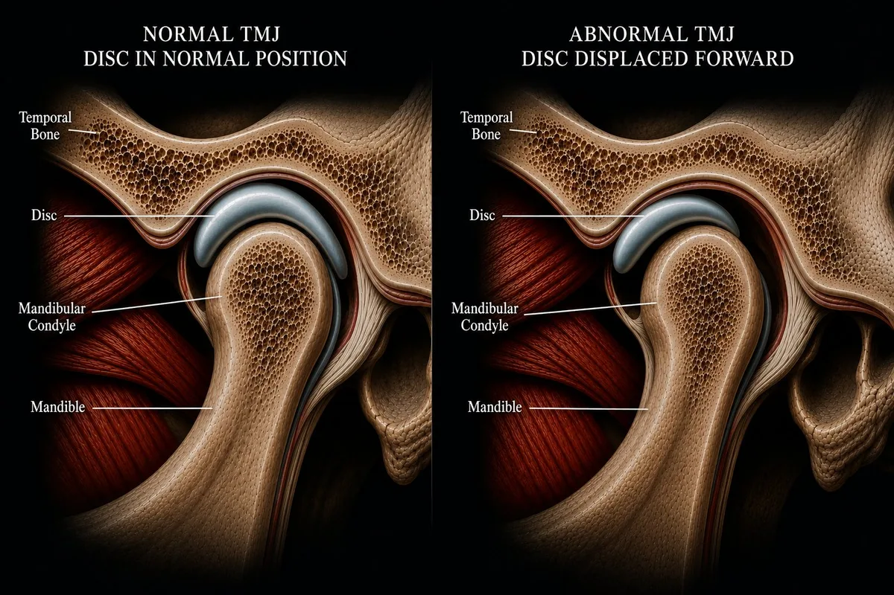

Each color overlay highlights a different jaw muscle. Select it to learn its name, function, and how it relates to TMJ disorder.
Jaw Elevator & Retruder
Temporalis
A broad, fan-shaped muscle covering the side of the skull. It closes the jaw and pulls it backward. In TMJ disorder, chronic temporalis tension produces the hallmark temple headache — a band of pressure across the forehead and temples that patients often mistake for a tension headache. The muscle sits directly under the skin here, and when overloaded from clenching or bruxism, it refers pain forward across the head.
Primary Jaw Closer
Masseter
The most powerful muscle in the body relative to its size. Running from the cheekbone down to the jaw angle, the masseter generates the force for chewing and clenching. In TMJ patients, chronic masseter hypertrophy from bruxism is one of the most visible signs of the condition — and one of the most common drivers of jaw pain, facial soreness, and morning stiffness. You can feel it bulge when you clench your teeth.
Key Disc Controller
Lateral Pterygoid
Arguably the most important muscle in TMJ disorder. Its superior head attaches directly to the articular disc and controls disc position during jaw movement. When this muscle is dysfunctional — from trauma, overuse, or neuromuscular imbalance — it pulls the disc forward out of position, producing the clicking, popping, and locking characteristic of disc displacement. This is why lateral pterygoid function is central to any chiropractic TMJ assessment.
Deep Jaw Closer
Medial Pterygoid
The medial pterygoid lies on the inner surface of the jaw, forming a sling with the masseter to elevate and close the mandible. Because it's deep and medial, it's often overlooked — but in patients with chronic clenching or bruxism, it develops significant trigger points that produce a deep, internal jaw ache that's difficult to localize. It also contributes to restricted jaw opening when in spasm.
Jaw Opener & Hyoid Stabilizer
Digastric
The digastric has two bellies connected by a tendon looped around the hyoid bone. The anterior belly opens the jaw and depresses the mandible. In TMJ disorder, the digastric often becomes hypertonic — particularly in patients who hold the jaw slightly open as a pain-avoidance behavior. Hyoid dysfunction from digastric imbalance can also contribute to throat tension and difficulty swallowing.
Normal TMJ — Disc in Position
In a healthy joint, the biconcave articular disc sits centered over the mandibular condyle — between it and the temporal bone above. As the jaw opens, the condyle rotates then translates forward, and the disc moves with it throughout the full range of motion. The result is smooth, silent, pain-free jaw movement.
Normal — disc centered
Why the Jaw Muscles Matter in TMJ Disorder
Most patients think of TMJ disorder as a joint problem. The joint is part of it — but the muscles surrounding the TMJ are equally important. The masseter and temporalis generate the forces that load the joint. The lateral pterygoid controls where the disc sits. The medial pterygoid and digastric determine how the jaw opens and closes. When any of these muscles become chronically overloaded, tight, or imbalanced, the entire system breaks down.
At Oregon TMJ, Dr. Segal evaluates both the joint mechanics and the surrounding muscle system — because treating one without the other rarely produces lasting results.
Normal TMJ vs. Disc Displacement — Side by Side
The clicking or popping many patients hear is the sound of the condyle sliding over the edge of a displaced disc. In a healthy joint, the disc stays centered and the jaw moves silently. When the lateral pterygoid pulls the disc forward — from trauma, overuse, or chronic muscle imbalance — the condyle clicks over the posterior band of the disc on opening.

Left: Normal TMJ — disc centered over condyle. Right: Anterior disc displacement — disc pulled forward, condyle no longer cushioned.
Clinical note: Not all TMJ clicking indicates the same severity of displacement. Some patients have stable clicking for years with no progression. Others progress to locking or significant pain. A proper evaluation determines where you are on that spectrum — and what, if anything, needs to be done about it.
The Neck Connection
What this anatomy model doesn't show is the cervical spine — but it matters as much as anything visible here. The muscles of the jaw attach to the hyoid, which connects through fascial chains to the neck. The upper cervical vertebrae share nerve pathways with the trigeminal nerve that supplies the jaw. Forward head posture changes the resting position of the mandible. This is why effective TMJ care at Oregon TMJ always includes a cervical spine assessment — the jaw doesn't work in isolation.
Ready to Understand What's Happening in Your Jaw?
A proper evaluation at Oregon TMJ looks at the joint mechanics, disc position, muscle function, and cervical spine together — and explains what we find in terms you can understand.